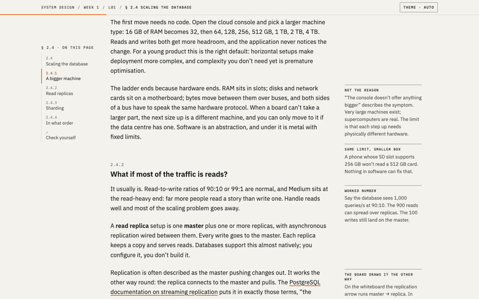

Spec Sheet
Round 1 · pageA precise engineering datasheet: one reading column, margin notes beside the text, hairline diagrams on a dot grid, one orange for focus.


How to try it
- Scroll and read top to bottom
- Step through the replication figure with its buttons
- Open the 'pause' prompt to reveal the answer